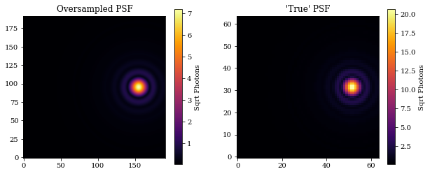
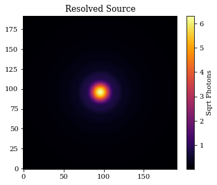
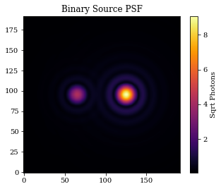
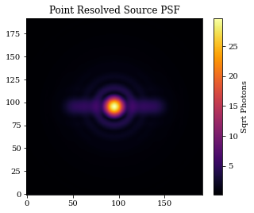
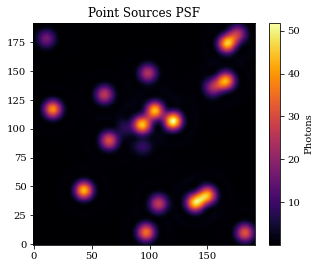
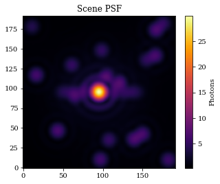

Sources & Spectra¤
This tutorials is designed to give an overview of both the Source and Spectrum classes within dLux.
# Basic imports
import jax.numpy as np
import jax.random as jr
# dLux imports
import dLux as dl
import dLux.utils as dlu
# Visualisation imports
import matplotlib.pyplot as plt
%matplotlib inline
plt.rcParams['image.cmap'] = 'inferno'
plt.rcParams["font.family"] = "serif"
plt.rcParams["image.origin"] = 'lower'
plt.rcParams['figure.dpi'] = 72
First lets whip up an optical system that we can use to propagate the sources through.
# Define our wavefront properties
wf_npix = 512 # Number of pixels in the wavefront
diameter = 1.0 # Diameter of the wavefront, meters
# Construct a simple circular aperture
coords = dlu.pixel_coords(wf_npix, diameter)
aperture = dlu.circle(coords, 0.5 * diameter)
# Define our detector properties
psf_npix = 64 # Number of pixels in the PSF
psf_pixel_scale = 50e-3 # 50 mili-arcseconds
oversample = 3 # Oversampling factor for the PSF
# Define the optical layers
layers = [('aperture', dl.layers.Optic(aperture, normalise=True))]
# Construct the optics object
optics = dl.AngularOpticalSystem(
wf_npix, diameter, layers, psf_npix, psf_pixel_scale, oversample
)
Overview¤
The Source and Spectrum classes in dLux work in tandem, with all Source objects containing a Spectrum object. There are only two Spectrum classes implemented in dLux:
Spectrumis a simple array-based spectrum, contatingwavelengthsandweights.PolySpectrumis a simple polynomial spectrum, containingwavelengthsandcoefficients.
In general users will not need to intract with the Spectrum objects directly, as they are automatically instatiated when creating a Source object. Lets take a look at the various different Source classes implemented in dLux.
PointSourceResolvedSourceBinarySourcePointResolvedSourcePointSourcesScene
They all have a similar interface, having both a .normalise and .model method. The .normalise method takes no inputs and normalises the source and spectrum, which is important during optimisation since the updates during that process can not guarantee that the source remains normalised. The model method has the following signature .model(optical_system, return_wf=False, return_psf=False), mirroring the OpticalSystem.model method. The return_wf and return_psf flags are used to determine what object is returned. If both are False, the returned psf is an array, if return_wf is True the returned psf is a Wavefront object, and if return_psf is True the returned psf is a PSF object.
Ands that about all there is to the Source objects! So lets jump in and have a look at these classes.
Initialising the Spectrum¤
Spectrum objects can be initialised from the Source objects in two ways, either by passing in a wavelengths and (optional) weights array, or by passing in a Spectrum object directly. If a Spectrum object is passed in, the wavelengths and weights arrays are ignored. If only a wavelengths array is passed in, the weights array is initialised to be an array of ones. If both a wavelengths and weights array are passed in, the weights array is normalised to sum to one.
PointSource¤
The PointSource class is very straightforwards with three attributes:
position- the position of the source in the sky, in radians.flux- the flux of the source, in photons.spectrum- the spectrum of the source.
Lets create one and model it through an optical system. We will also return the PSF object so we can examine both the oversampled and downsampled psfs.
# Define the source properties
flux = 1e4
position = dlu.arcsec2rad(np.array([1, 0]))
wavelengths = 1e-6 * np.linspace(0.9, 1.1, 10)
# Construct the source object and examine it
point = dl.PointSource(wavelengths, position, flux)
print(point)
PointSource(
spectrum=Spectrum(wavelengths=f32[10], weights=f32[10]),
position=f32[2],
flux=10000.0
)
# Model the source and examine the PSF
psf_oversample = point.model(optics)
PSF = point.model(optics, return_psf=True).downsample(oversample)
Plotting code
# Plot
plt.figure(figsize=(10, 4))
plt.subplot(1, 2, 1)
plt.title("Oversampled PSF")
plt.imshow(psf_oversample**0.5)
plt.colorbar(label='Sqrt Photons')
plt.subplot(1, 2, 2)
plt.title("'True' PSF")
plt.imshow(PSF.data**0.5)
plt.colorbar(label='Sqrt Photons')
plt.show()

ResolvedSource¤
The resolved source operates very similarly to the PointSource class, only adding the distribution attribute.
position- the position of the source in the sky, in radians.flux- the flux of the source, in photons.spectrum- the spectrum of the source.distribution- the distribution of the source.
Lets create one and model it through an optical system.
# Define the source properties
flux = 1e4
position = np.zeros(2)
wavelengths = 1e-6 * np.linspace(0.9, 1.1, 10)
distribution = np.ones((10, 10))
# Construct the source object and examine it
resolved = dl.ResolvedSource(wavelengths, position, flux, distribution)
print(resolved)
# Model the source
psf = resolved.model(optics)
ResolvedSource(
spectrum=Spectrum(wavelengths=f32[10], weights=f32[10]),
position=f32[2],
flux=10000.0,
distribution=f32[10,10]
)
Plotting code
# Plot
plt.figure(figsize=(5, 4))
plt.title("Resolved Source")
plt.imshow(psf**0.5)
plt.colorbar(label='Sqrt Photons')
plt.show()

BinarySource¤
The BinarySource class parametrises two point sources with 6 parameters:
position- the mean position of the source in the sky, in radians.separation- the separation of the two sources, in radians.position_angle- the position angle of the two sources, in radians.mean_flux- the mean flux of the sources, in photons.contrast- the contrast of the two sources, in photons.spectrum- the spectrum of the sources.
We can also pass in an array of weights in order to give them different spectra. Lets create one and model it through an optical system.
# Define the source properties
wavelengths = 1e-6 * np.linspace(0.9, 1.1, 10)
weights = np.array([np.linspace(0.5, 1.5, 10), np.linspace(1.5, 0.5, 10)])
# Construct the source object and examine it
binary = dl.BinarySource(
wavelengths,
mean_flux=1e4,
contrast=5,
weights=weights,
separation=dlu.arcsec2rad(1),
)
print(binary)
# Model the source
psf = binary.model(optics)
BinarySource(
spectrum=Spectrum(wavelengths=f32[10], weights=f32[2,10]),
position=f32[2],
mean_flux=10000.0,
separation=4.84813681109536e-06,
position_angle=1.5707963267948966,
contrast=5.0
)
Plotting code
# Plot
plt.figure(figsize=(5, 4))
plt.title("Binary Source PSF")
plt.imshow(psf**0.5)
plt.colorbar(label='Sqrt Photons')
plt.show()

PointResolvedSource¤
The PointResolved source is a combination of the PointSource and ResolvedSource classes, allowing for a point source and a resolved component to be modelled simultaneously. It has the following attributes:
position- the position of the source in the sky, in radians.flux- the mean flux of the point and resolved source, in photons.contrast- the contrast of the two sources, in photons.spectrum- the spectrum of the source.distribution- the distribution of the resolved source.
Lets create one and model it through an optical system.
# Define the source properties
wavelengths = 1e-6 * np.linspace(0.9, 1.1, 10)
distribution = np.ones((1, 100))
# Construct the source object and examine it
point_resolved = dl.PointResolvedSource(
wavelengths, flux=1e6, contrast=5, distribution=distribution
)
print(point_resolved)
# Model the source
psf = point_resolved.model(optics)
PointResolvedSource(
spectrum=Spectrum(wavelengths=f32[10], weights=f32[2,10]),
position=f32[2],
flux=1000000.0,
distribution=f32[1,100],
contrast=5.0
)
Plotting code
# Plot
plt.figure(figsize=(5, 4))
plt.title("Point Resolved Source PSF")
plt.imshow(psf**0.5)
plt.colorbar(label='Sqrt Photons')
plt.show()

PointSources¤
The PointSources class is very similar to the PointSource class, simple expanding the first axes of all the PointSource attributes in order to model multiple point sources simultaneously. It has the following attributes:
position- the positions of the sources in the sky, in radians.flux- the fluxes of the sources, in photons.spectrum- the spectrum of the sources.
Lets create one and model it through an optical system.
wavelengths = 1e-6 * np.linspace(0.9, 1.1, 10)
dr = dlu.arcsec2rad(1.5)
positions = jr.uniform(jr.PRNGKey(0), (20, 2), minval=-dr, maxval=dr)
fluxes = jr.uniform(jr.PRNGKey(1), (20,), minval=1e3, maxval=1e4)
# Construct the source object and examine it
points = dl.PointSources(wavelengths, positions, fluxes)
print(points)
# Model the source
psf = points.model(optics)
PointSources(
spectrum=Spectrum(wavelengths=f32[10], weights=f32[10]),
position=f32[20,2],
flux=f32[20]
)
Plotting code
# Plot
plt.figure(figsize=(5, 4))
plt.title("Point Sources PSF")
plt.imshow(psf)
plt.colorbar(label='Photons')
plt.show()

Scene¤
The Scene class is a simple container class for Source objects, allowing for multiple sources to be modelled simultaneously. It behaves similarly to optical systems in dLux, taking in a list of Source objects that are stored in a dictionary. Lets model a series of the sources we just created through an optical system.
# Define the sources
sources = [("resolved", point_resolved), ("points", points)]
# Construct the scene object and examine it
scene = dl.Scene(sources)
print(scene)
# Model the scene
psf = scene.model(optics)
Scene(
sources={
'resolved':
PointResolvedSource(
spectrum=Spectrum(wavelengths=f32[10], weights=f32[2,10]),
position=f32[2],
flux=1000000.0,
distribution=f32[1,100],
contrast=5.0
),
'points':
PointSources(
spectrum=Spectrum(wavelengths=f32[10], weights=f32[10]),
position=f32[20,2],
flux=f32[20]
)
}
)
Plotting code
# Plot
plt.figure(figsize=(5, 4))
plt.title("Scene PSF")
plt.imshow(psf**0.5)
plt.colorbar(label='Photons')
plt.show()
